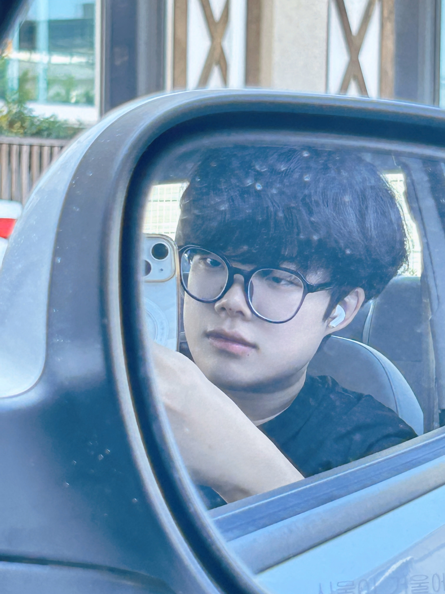

김효민 개강함 ㅋㅋㅋㅋㅋㅋ 엌ㅋㅋㅋㅋ
학교 데려다주고 병원 가서 기다리는 중 셀피타임 ㅋㅋ
보정 쪼매 넣은 사진인디 워뗘 ㅎ
???: 효진아 이건 네가 아니야
뭐 우땨용 ㅎ 내 마음에 들면 됏지 ^^
갑자기 담당 선생님 원장님으로 바뀌어서 히스토리 다시 설명함 ㄱ-
근데 약을 너무 잘 지어 주셔서 사랑에 빠지고 말앗워,
아 집에 오니까 심심하드라구...
그럼 모 해야 댄다? 코딩 해야 한다 ㅋㅋ
응~ 안 하고 뻗대다가 오늘 css 못 뗐어~ ㅋㅋ
허지만 말이야... 지금 하면 되는 거 아닐까?
우리의 밤은 당신의 낮보다 어쩌구
어떻게 생각함들?
어차피 밤새 공부할 거긴 함
근디... 집에 오니까 배가 너무 고픈 거임
진심 떡 하나 주면 안 잡아먹을 정도로 ;;
그래서 파스타 해 먹엇웡 ㅎ
2.5인분 ㅎ
다이어트? 넹? 모라고요? 몰라요~ 와~
이상하게 면은 많이 들어가는 것 같애...
내가 롯백에서 파스타 4인분 먹은 그 날처럼...
참 이상하지...? 면을 사랑한다는 건 말이야...
내가 내가 아니게 되는걸...
Re: 먹짱부터 시작하는 면 식사 생활
중학생 때 하던 무에타이를 다시 시작햇워요...
등록할 때 절 알아보시던 관장님... 아이고...
좋은 의미인 걸까나? //
저 많이 컷죵!! 하니까 어 그래 많이 컷네 ㅋㅋ 하시던
지금은 뭐 학교 다녀? 일해? 하시던
네? 암것도 안 해요 ㅎ
기억하시는 게 당연함 맨날 샌드백 터트릴 기세로 쳤음
다 까묵어서 관장님 기억이 안 납니다!
당당하게 외쳤더니 어 처음부터 다시 할 거야 시전하심
처음에 개힘들엇는데... 아 ;
줄넘기 오지게 하고 몸 풀고 붕대 감는 법 다시 배우고 글러브 차고
또 어깨에 힘 잔뜩 주고 샌드백을 터트릴 기세로 쳣다...
힘 빼라는 말만 다섯 번 들은 것 갓아...
하지만, 그치만, 나는 이게 운동인걸,
심심하면 집에서 쉐복 때릴 수 잇다... 몸 덜 풀려서 종아리 개땡김 OTL
내일은 발목을 콱 잡을 만한 보호대를 사야것으
복근단련은 두 배로 하고 왔다
안티티티티...
집에 왓더니... 아, 워떡하지?
밥 먹기가 아쉬운 거임
운동을 이렇게 열심히 해 놓고 밥을 먹어?!
살찌면 어캄?!
외모 강박이 심해진 요즘이라 조심해야 한다...
에너지바 먹고 공부할 거임 ㅎ
응 어쩔에너지바~
단백질 4g 함량이라는데 높은 건감? 몰루 ㅎ
좋은 셰이크 있으면 추천 좀 해 주쉥야
언제든 열려 있는 나애 디엠,
와 주시궛어요
오늘 하루... 개뿌듯해!!! ★★★★★